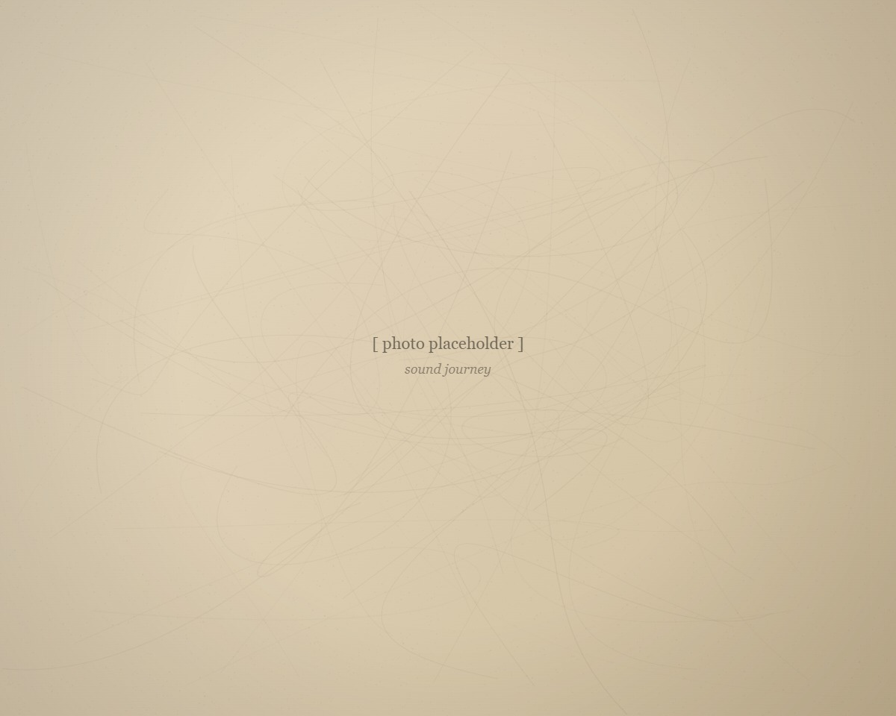

Noom Sound Studio · Private & villa sound healing
Koh Samui · at the studio or your place
One group, no strangers, a time you choose. On our covered terrace in Lamai from ฿2,500 for two, or at your villa, hotel or retreat anywhere on Koh Samui from ฿4,000. We bring the instruments and set the room.

The idea
It is the same sound journey we play on Wednesdays and Sundays, held for your group alone. You lie down. Two of us play handpan, gong, crystal and Tibetan bowls around you for seventy-five minutes. Nothing is asked of you, and there is almost no talking.
What changes is the room. In an open session there are eight mats and eight people, and the start time is fixed. In a private session the time is yours, the space is yours, and nobody you did not invite is lying next to you. That matters more than people expect. Plenty of guests want to rest properly, cry if it comes, or fall asleep without a stranger a metre away.
It also means we can play to you rather than to a full room. With two people on the mats we work closer and quieter, and we can stretch the part that is holding you and cut the part that is not. With eight, we play the average of the room.
You choose the hour too. Late afternoon into sunset is the one most people pick. After dinner works, and so does the morning if you would rather start the day with it than end it.
Two places
For two · +฿500 per extra guest · up to seven · 75 min
Our terrace in Lamai, five minutes inland from the beach, in the forest above the sea. Open on three sides, covered overhead, and yours for the evening. Mats, tea and the sound of the trees included. Park at the bottom and take the stairs; we send a short video for finding it once you book.
Message to book →For two · +฿500 per guest · up to ten · 75 min
Anywhere on Koh Samui — Lamai, Chaweng, Bophut, Maenam, Taling Ngam, the hills in between. We bring the instruments, the mats and everything we need, set the room, play, and pack it away. You do not have to leave the house.
Message to book →We usually reply within a few hours.
Your space
Less than people assume. Nothing is amplified and nothing is plugged in, so what matters is quiet and floor space.
About two metres by one for each guest lying down, plus a couple of metres for us and the gong. A living room, a bedroom with the bed pushed back, a terrace or a sala all work. For four guests, roughly five by four metres is comfortable.
The main thing. Away from the road if you can, and a room where nobody walks through. Pool pumps, air conditioning and garden staff are worth turning off or timing around; the last twenty minutes of a session are very soft.
A tiled or wooden floor and one solid wall behind us give the bowls their tail. Heavy curtains and thick carpet eat it. If the villa has two options, we will pick the emptier, harder room.
We arrive 30 to 40 minutes before the start, and pack down in about 20. Allow two hours end to end. For groups of eight or more, give us 45 minutes.
The gong and stand are the heavy part. Tell us if there are many stairs, a steep drive or a long walk from parking, and we will bring another pair of hands.
We bring mats for everyone. If we play after dark, low light or a few candles is all the room needs — no overhead lights.
Who books
Couples. The most common booking. Two people, the terrace or their own villa, usually around sunset. Often an anniversary, sometimes a honeymoon, sometimes just a week where they wanted one slow evening.
Birthdays and last nights. A group of four or six who would rather lie down together than sit in another restaurant. We play, then everyone eats afterwards.
Villa guests and families. Whole houses booked for a week, where getting eight people into cars at 17:00 is the hard part. We come to you instead.
Retreat organisers. Yoga, breathwork and wellness retreats across the island book us for one evening of their programme, usually mid-week, as the session where nothing is required of anyone. We fit the group size and the schedule.
People who came to an open session. They liked it, and want the room without the room.
For venues
We collaborate with spas, hotels, yoga studios and wellness spaces across Koh Samui, on regular sessions and one-off events. A weekly or monthly sound journey on your terrace, a session inside a retreat programme, a soft opening, a staff evening.
We have played at Kamalaya, Anantara Lawana, W Koh Samui, Conrad and 5 Elements, and we hold a place in the Kamalaya wellness programme. We arrive with everything, need no power and no sound system, and we are quiet with your guests. Two practitioners, seventy-five minutes, acoustic instruments only.
For venues we quote per event rather than per guest, and we are happy to hold a fixed weekly slot. Write to noomsoundstudio@gmail.com or message +90 546 841 9181 with your venue, the space and roughly how many guests, and we will come back with dates and a price.
The Regulars
The Regulars pass is ฿2,000 for four sessions, valid one year and not tied to your name. Two full passes — eight unused sessions — can be traded for a private evening on the terrace for up to eight guests instead.
People on the island use it that way: come through the year, then spend what is left on one night with their own people on the mats. Details of the pass sit in The Regulars on the main page.
Good to know
Loose clothes, and eat light. A sound journey is rest, not treatment: we make no medical claims and we do not treat conditions. Most guests leave rested, and some leave with nothing more than a pleasant hour behind them.
If anyone in the group is pregnant, has a hearing condition, epilepsy, a recent surgery, or is sensitive to loud sound, tell us before we start. We adjust the volume and where we place them in the room. For anything medical, check with your own doctor first.
More answers on the FAQ page.
Questions
Book a private session
Two lines is enough: how many of you, and where. We will come back with a time and a price.
We usually reply within a few hours.